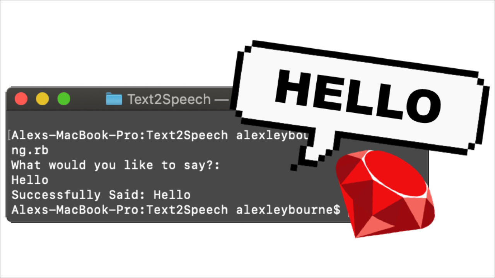

Ruby Gems are a wild world of many functions for you to easily add to your ruby programs. Some are better than others and this is mostly easy to tell from the number of downloads the gem has. To find a gem simply head to RubyGems.org and search for the function you are after. In my case, I search text to speech, speak and speech until I came across a gem that suited my needs. The Gem we’ll be using today is called TTS aka Text To Speech. When you find a gem the best thing to do is click on the documentation and go through how it works and the functions it has so you can determine if it suits your needs. After going through their documentation and their example I was able to see how the gem worked and its easy implementation. A key part of adding gems to your project is using bundler. Bundler easily manages your application’s dependencies making it easy to install gems and share your project with others. Installing bundler is easy, just like installing any gem. just type “gem install bundler” and it will do its thing. gem install bundler next step is to initialize bundler so it creates a gem file for you. this is easy to do as well. bundler init Then add your gems (tts in our case) bundler add tts Bundler will automatically make a Gemfile for you in your programs directory that lists your program’s dependencies, where to get them from and the required versions. All the recipient has to do is type: bundle install Ok, so now you know all about gems and have tts installed ready to go. What we’re going to do is make a simple program that takes the users input and then says it and also displays in the command line what it said. first of all, we will make sure it requires tts and then we will make a function that lets us easily say something just by typing “say(what we want to say)”. Then we will output a confirmation of what we just said. require 'tts' def say(word) s = "#{word}" repeatTimes = 1 s.play("en", repeatTimes) puts puts "Successfully Said: #{word}" end Now we will add a message that prompts the user to type in what they want to say. Then grab what they type in and run it through the function we made. puts "What would you like to say?:" say(gets.to_s) Now to make it so we don’t have to keep loading the program every time we want to say something. We will add a simple loop that asks the user if they would like to say something else. If they click yes it loops the previous code and if not it will say bye and close the program. run = "yes" while run == "yes" puts puts "What would you like to say?:" say(gets.to_s) puts puts "Would you like to say something else?" puts "yes / no" run = gets.chomp end puts say("Bye") puts "Bye" All we did was add a small value above that decides whether it loops the previous code or if it will end the program. Here is all the code together with some handy notes: So now you have your own text to speech program in ruby! I hope this helped you further your knowledge of ruby and the world of gems. I make these articles to help me remember bits as I learn them and to hopefully help others also.
Text to Speech in Ruby!
by Alex Leybourne
